改版前 v1.0.0
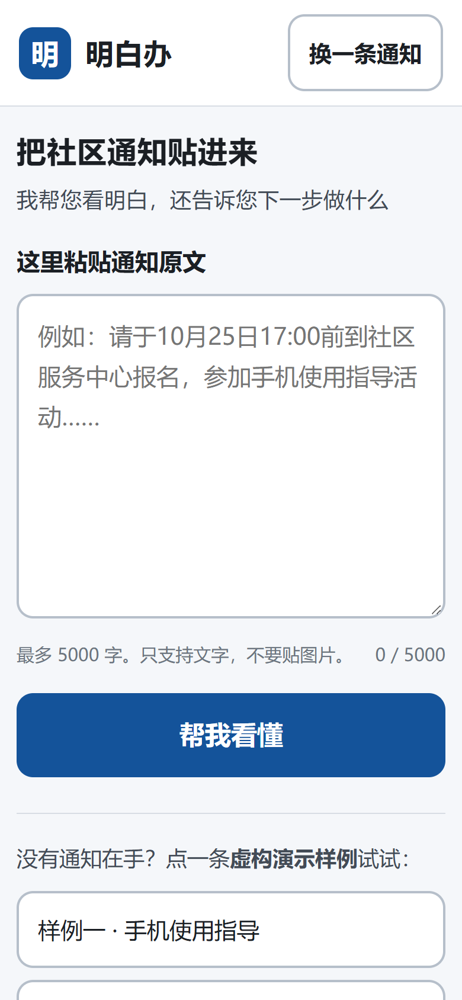
左：A 轮之前的 v1.0.0（长辈独立粘贴视角） 右：A 轮 v1.1.0-a2（家人／志愿者整理视角）
定位从「收到通知之后」改为「帮家人整理一条社区通知」；主按钮改成「整理成行动卡」；插画放在主按钮之后，避免把操作挤出首屏。

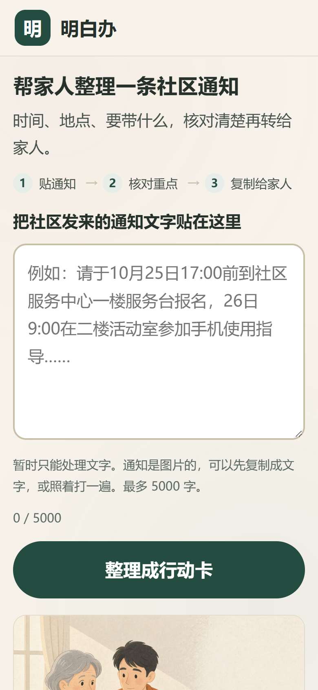
改版前为单列居中，信息密度低；改版后为双栏：左侧输入与主按钮，右侧主插画，顶栏与正文左对齐。
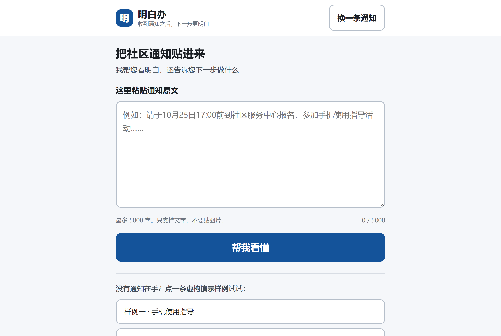
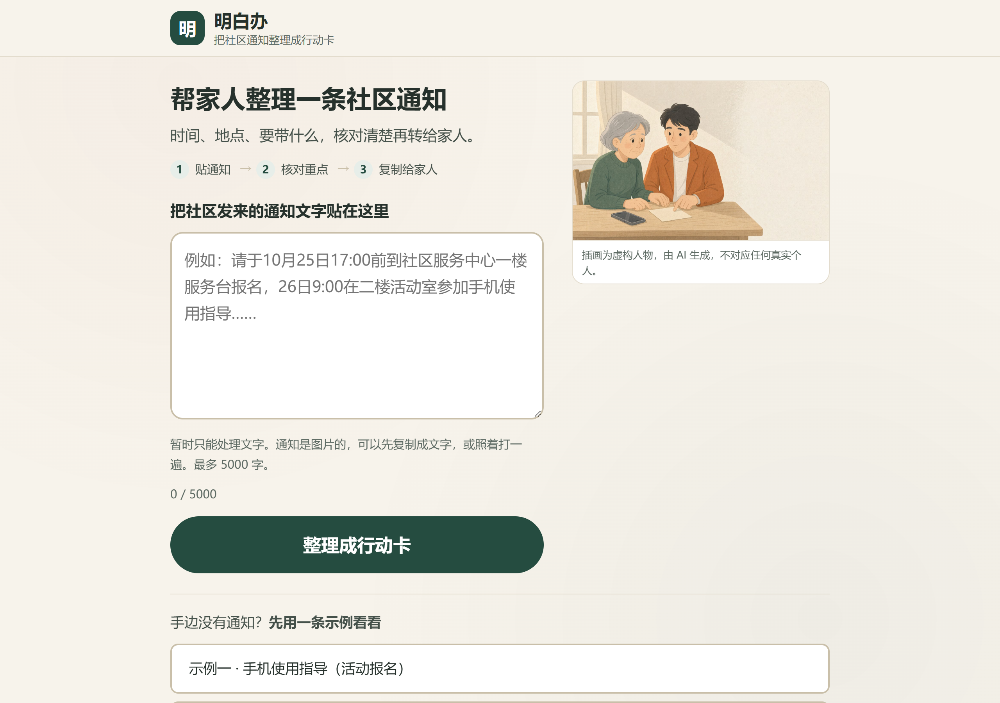
改版前只有转圈；改版后配小幅静物插画，并明确说明「这一步由 AI 逐句阅读通知原文」，不再给固定秒数。

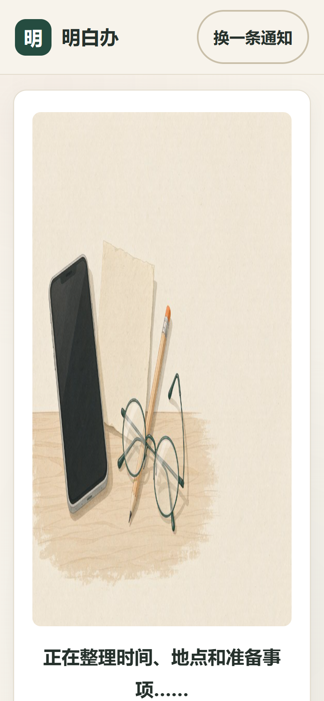
改版前首卡只写「这条通知说的是」；改版后先给「这条通知要办什么」，并在冲突时把「先确认」提醒放在结论之后、其它卡片之前。
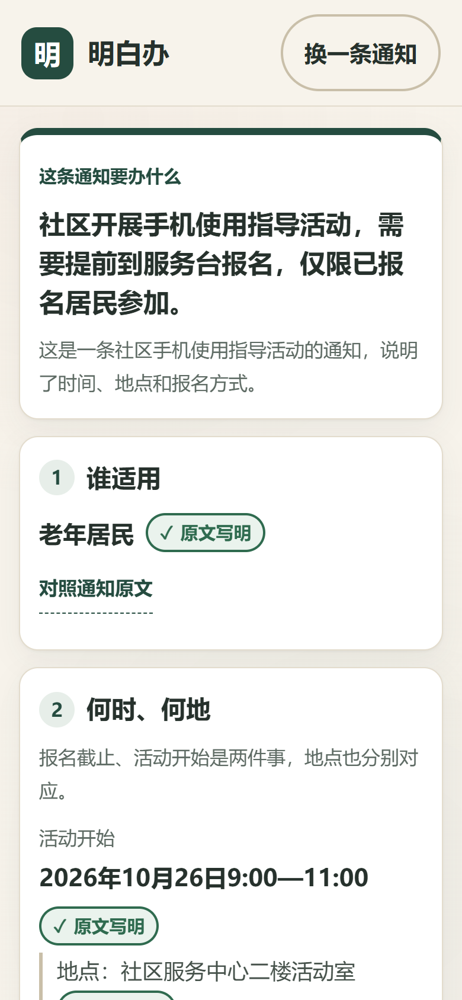
按钮文案由「看原文依据」改为「对照通知原文」，更接近整理者会说的话。
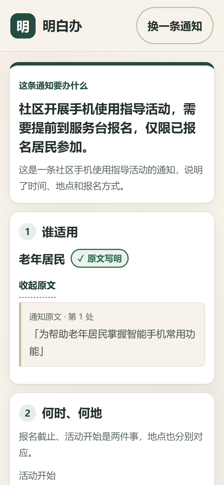
改版前只有徽章「通知未说明」；改版后同一状态会用一句可执行的话说明该怎么办，并把待确认问题单列成卡。

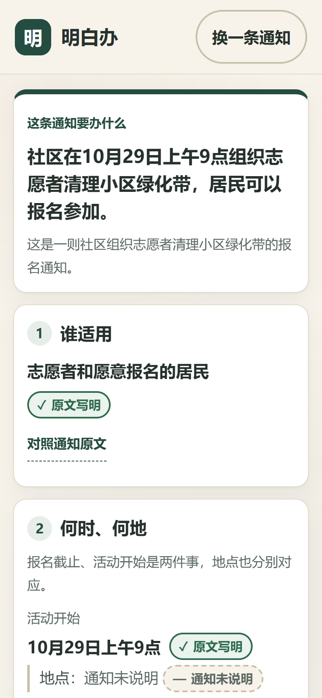
改版前冲突只体现在某条时间项的徽章上，容易被略过；改版后在最上方单独出横幅，写明「先问清楚再安排」，且不默认收起。
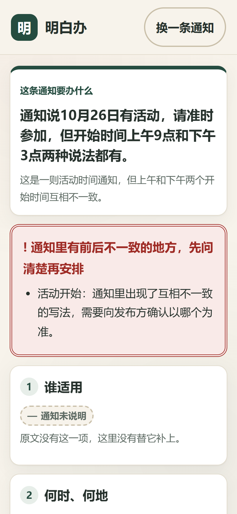
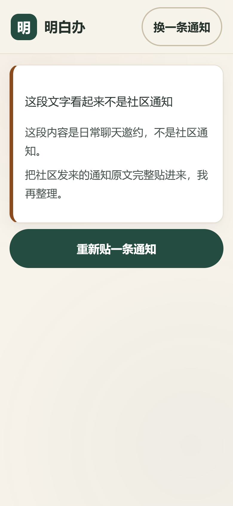
改版前准备项与行动项混排在「5 您接下来做什么」；改版后拆成「3 家人需要准备什么」与「4 下一步」，并在复制文本中使用 [x]/[ ] 反映当前勾选。
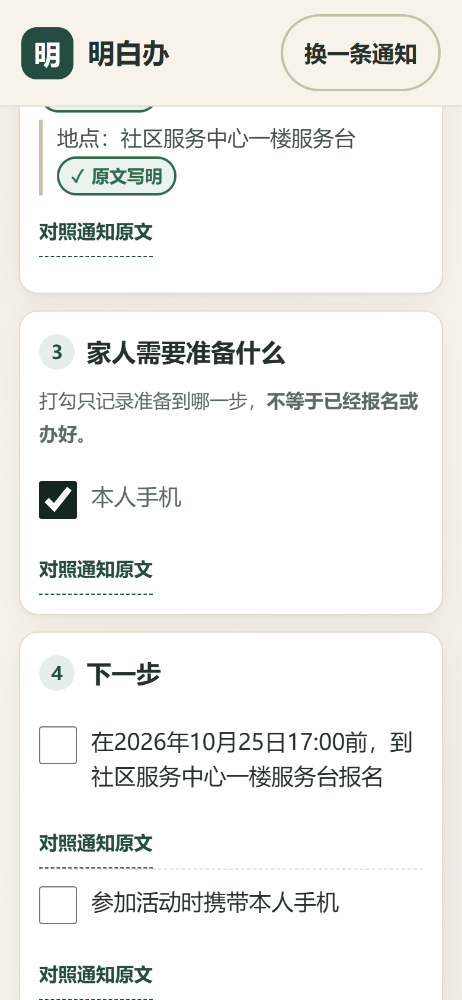
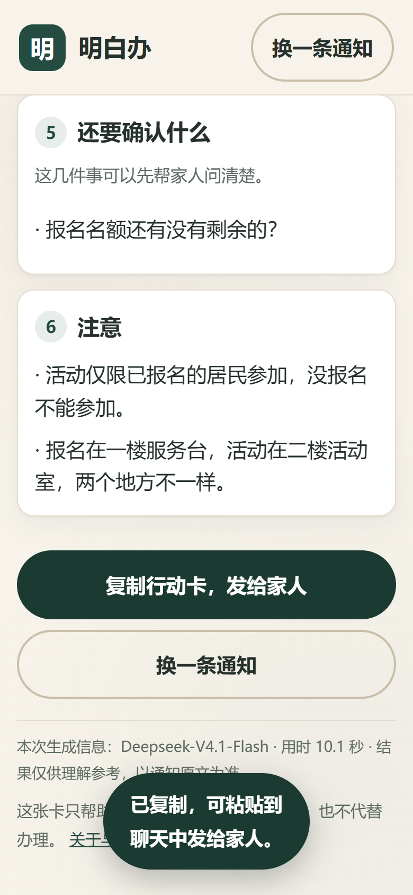